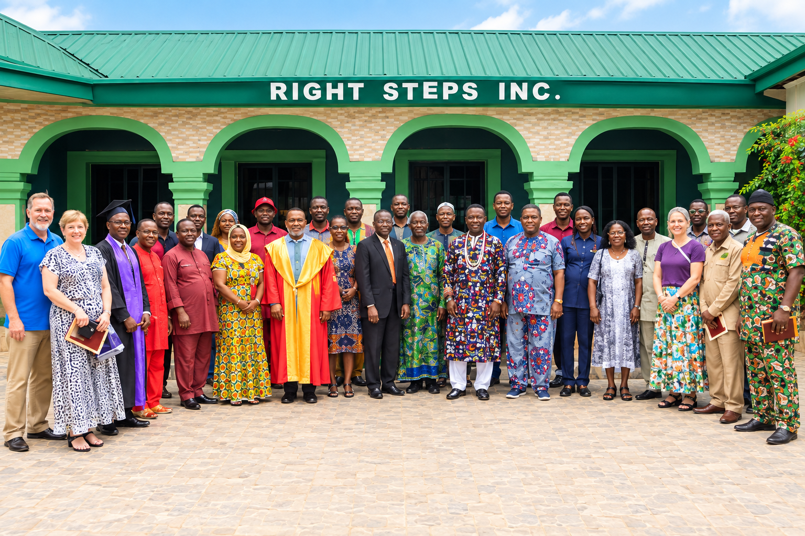
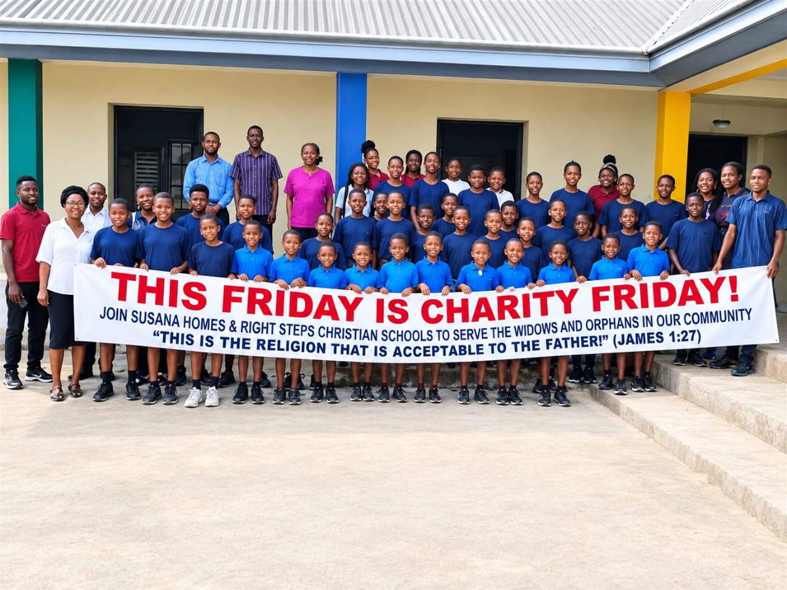

Discover who we are, what we stand for, and the institutions and opportunities that make up Right Steps Incorporated.

Right Steps Incorporated is committed to creating opportunities that support education, skills development, personal growth and service.
Through its different institutions and initiatives, Right Steps seeks to provide meaningful pathways for children, young people, families and communities.
To provide meaningful opportunities for education, development, practical skills and positive community impact.
To build a community where people are equipped with knowledge, skills, character and opportunities to make a positive difference.
Explore the different institutions and initiatives under Right Steps Incorporated.
Our Founder Dr. Chi Ekwenye-Hendrick Founder & Missionary Director, Right Steps, Inc. Dr. Chi Ekwenye-Hendrick is the founder and missionary director of Right Steps, Inc., dedicated to serving communities through Christian education, ministry, and community development. With a strong foundation in the Church of Christ and many years of experience in ministry and education, Dr. Chi has devoted her life to empowering children, women, students, and families through faith, learning, and compassionate service. Under her leadership, Right Steps has supported initiatives including Right Steps Christian School (RSCS), Right Steps Institute of Management and Technology (RSIMT), Jan and Sue Blackwell Institute for Biblical Studies (JSB), and Susana Homes. Her vision is to serve, educate, empower, and build stronger communities through faith, knowledge, and compassionate leadership.
Learn More About Our Founder →